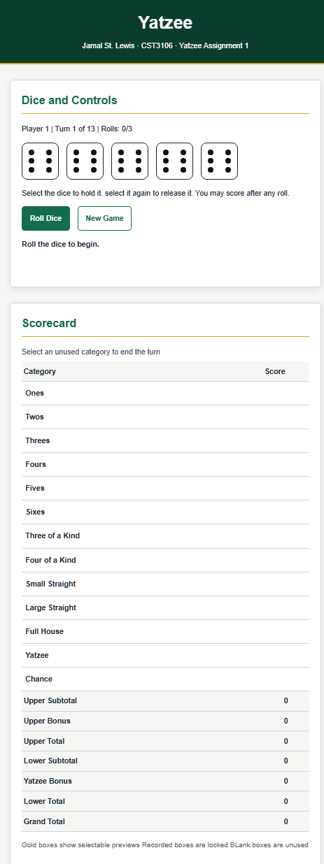

Featured Project · CST3106
Yatzee Dice Game
My Yatzy game is a single-player web application built with HTML, CSS, and JavaScript. The application is split between the server and the client. The client runs in browswer to handle the interface, scoring and the selected held dice. The server generates the random dice values for the rolled dice and will send it back to the browser interace.

About the project
I developed this game through a series of web development labs for my CST306 Web Development class at Algonquin Colleg. This started as a browser-based application and evolved into a client-server application, with dice rolls generated by a Node.js/Express server.
Players can roll dice, hold selected dice between rolls, and record results using an interactive scorecard. Dot-based dice faces and rotation animations provide visual feedback.
Progression by assigment
Assignment 1
Creation of a single player Yatzee game using an HTML for the UI and Javascript for the gamestate management.
Components include:
- Game Rules Implementation: Five dice, player selection of specific dice, re-rolling unselected dice, scoring calculation and scoring tracking
- A user interface with with a game board, a scorecard and buttons for game actions like dice rolling
- Game state management of rounds, dice rolling logic and gameplay instructions
- Game ending after a set number of rounds
- Responisble design for various screen sizes
- Readme Markdown File
- Github Submission
Assignment 2
Using Node.js and Express for server-side integration by shifting the calculations to the sever. The client-side will still handle presentation and interactions.
Components include:
- Server Setup using node.js and Express
- API creation and proper HTTP methods (GET, POST, PUT, DELETE)
- Client-side javascript modification to use Fetch API for asynchronous requests
- Server responses update game UI
- Current game-state stored on server
- Server side handles calculations
- Readme Markdown file
Key features
- Server-generated dice rolls
- Selectable dice for holding and rerolling
- Interactive scorecard and running totals
- Dot-based dice faces and rotation animations
What I learned
- Managing game state with JavaScript
- Separating game logic from interface updates
- Requesting data from an Express endpoint
- Using jQuery for visual effects
Technologies used
- HTML
- CSS
- JavaScript
- jQuery
- Node.js
- Express
Main files and responsibilities
index.html
Page structure and main interface constructed in HTML & Javascript. It houses the event handlers, score card, dice drawing and animation components
YatzeeStyles.CSS
The stylesheet that determines the colours, layouts and appearance for the interface and its components
YatzeeDice.js
Controls the dice calculations and values. It will store the dice values, hold dice states, request values from the server adn reset the dice
YatzeeEngine.js
Regulates the scoring by validating the dice and scoring values, calculating the scores and bonuses, as well as scorecard completion
YatzeeGame.js
Handles the turn tracking, roll count and game termination
server.js
The express server is houses here and runs the dice-roll value calculations
HTML Page Design
HTML provides the structure of the game. The page uses elements such as Header, Main, Section, and Footer to organize the content. The main interface contains a dice-and-controls panel, a scorecard panel, and instructions explaining how to play.
The dice and game controls use actual Button elements. The scorecard uses a table with a caption, column headings, and rows for totals. JavaScript creates the scoring-category rows when the page first loads, using the category information stored in YatzeeEngine.js. This avoids manually writing a separate HTML row for every category
JavaScript: game logic and interface updates
The game uses three JavaScript classes: YatzeeDice, YatzeeEngine, and YatzeeGame. Each class groups related information and functions together.
YatzeeDice
This calss stores two different arrays. The first contains all five dice values. The second contains a boolean values for each dice to indicate whether it should be held or kept during the next roll.
YatzeeEngine
This class contains the scoring rules. It calculates category scores, records selections, adds bonuses, and checks whether all categories have been filled. Any unused and available categories are stores as null, while 0 indicates a used category that provides zero points.
YatzeeGame
This class coordinates the other two YatzeeEngine and YatzeeDice classes. It tracks the current round, number of rolls, total score, game-over state. It also prevents actions such as rolling more than three times in a turn or selecting a score before rolling.
JavaScript controls the game logic and updates the interface. The code is split into several files, each with a specific purpose. YatzeeDice.js manages the dice values and holds, YatzeeEngine.js handles scoring, and YatzeeGame.js tracks turns and rolls. The main index.html file contains event handlers for user interactions, such as rolling dice, holding dice, and recording scores.
Animation and Gamplay
Event Handlers
Event handlers connect player actions to game methods:
- Selecting Roll Dice starts the animation and dice request.
- Selecting a die changes whether it is held.
- Selecting an available score box records the score and ends the turn.
- Selecting New Game resets the game, with a confirmation prompt if progress has been made
JQuery
We use JQuery helps draw each die by adding span elements for the dots. CSS positions those dots to represent values from one to six. It also updates classes, attributes, and disabled states.
The visual dice animation uses jQuery’s .animate() method to change an angle over 600 milliseconds. During each animation step, the code applies a CSS transform: rotate(...) to the die. Held dice are excluded from this animation.
Server: generating random dice rolls
The server uses Node.js and Express. It provides a GET endpoint
called /roll-dices, which generates five random
integers between one and six using
Math.floor(Math.random() * 6) + 1.
The server returns these values as a JSON array.
The browser requests these values using the Fetch API. The server generates five values for each request, but the client only replaces the values of dice that are not held.
This demonstrates communication between a browser and a server. However, scoring and game state are still managed in the browser, so server-generated rolls alone do not prevent client-side manipulation.
CSS: appearance and responsive layout
CSS controls how the game looks. The stylesheet defines reusable values in :root, including green and gold colours, spacing sizes, rounded corners, and shadows. These CSS variables are then reused throughout the stylesheet. For example, var(--green) supplies the same green colour to multiple interface elements.
The stylesheet applies different appearances and/or techniques to different elements. Flexbox is used to arrange specifically the dice and controls but for wrapping when necessary. Scoreboxes also have different appearance based on whether they are unused, a selectable preview option, recorded or unavailable.
Use of Fetch API, JSON and Asynchronous javascript
The program uses the following Fetch API to request Dice Values:
const response = await fetch("/roll-dices");
const serverDiceValues = await response.json();The code uses requests dice values in JSON format with an asynchronous application of await & async. One application of this is the Promise.all() method, which waits for all five dice to finish their rotation animation before updating the interface with the new values.
Scoring techniques
The scoring engine uses arrays, objects, loops, and array methods to evaluate the dice.
- reduce() to add dice values and calculate subtotals.
- every() to check that all dice satisfy a condition.
- some() to check whether a matching count or available category exists.
- Set to remove duplicate values when checking a small straight.
- sort() to arrange values for straight detection.
Accessbility Features
- Native buttons for game actions.
- aria-pressed to indicate whether a die is held.
- Updated aria-label values describing dice and score buttons.
- role="status" for changing game messages.
- Table captions and heading scopes.
- Visible keyboard-focus outlines.

Error handling
The dice request checks response.ok before using the response. If the request fails, the dice class returns false, and the game displays a message explaining that it could not roll the dice. A failed request does not increase the roll counter.
The scoring engine also checks that a dice array contains exactly five integers between one and six. Before recording a score, it verifies that the category exists, has not already been used, and is allowed under the implemented Joker rules
Screenshots show the local application. A live playable version is not linked yet.